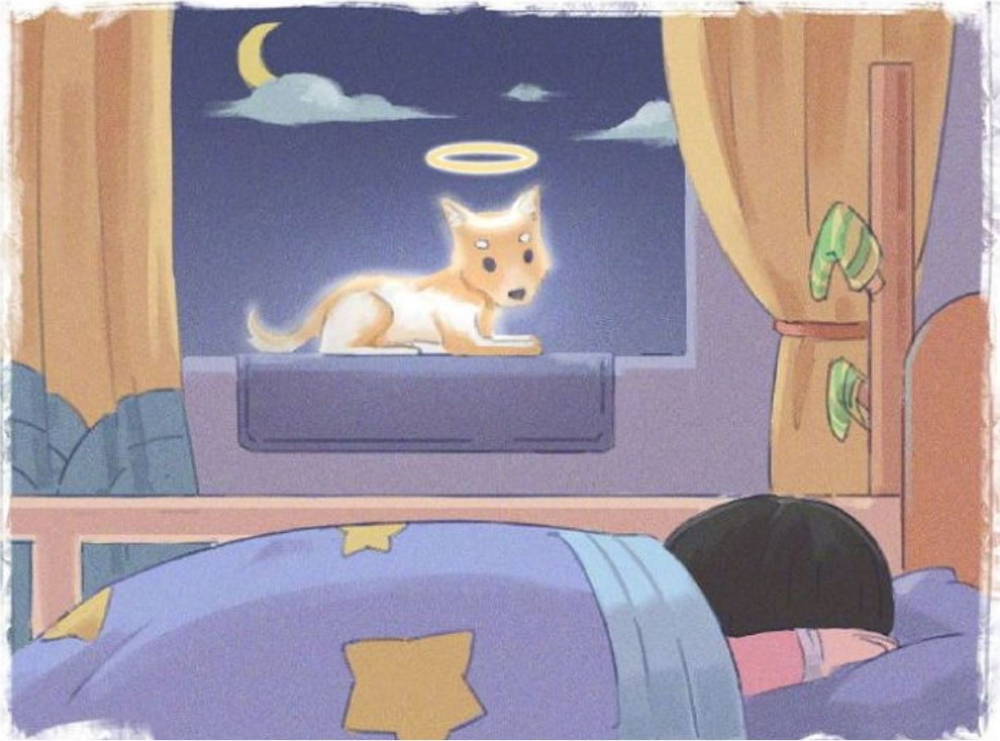

반려동물의 마지막을 위한 배웅 절차
사후 기초 수습방법
1. 방석 또는 조금 두터운 타올 위에 아이를 옆으로 눕힌 다음, 수건을 두번 정도 접어서 목과 머리 중간 부분(경추)을 조심히 받쳐주세요.
시간이 지나면서 잔뇨와 잔변이 나오거나 코와 입에서 혈흔 또는 체액이 역류할 수 있기 때문에 머리 부분은 얇은 타올을 덧데 주고 아래쪽은 배변패드를 덧데 깔아준 상태에서 잠시 지켜봐 주세요.
2.누워있는 아이들의 입 부분을 살펴줍니다.
이때, 혀가 밖으로 나와있다면 혀를 입 안쪽으로 조심스럽게 넣어주세요.
입이 벌어져 있는 만큼 물티슈 혹은 탈지면을 접어서 넣어주고 윗니와 아랫니 사이에 고여준다는 느낌으로 이빨 사이에 고정해줍니다.
아이들이 무지개 다리를 건넌 시점부터 서서히 입이 벌어지게 되고, 옆으로 있는 자세로 누워있기 때문에 혀가 밖으로 나와있는 경우가 있습니다.
이런 상황에서 사후경직이 시작되고 다시 입이 다물어지게 되면 혀를 물 수 있기 때문에 물티슈 혹은 탈지면을 입 안쪽에서 넣어 혀를 보호해주세요.
*사후경직 : 사망 후 근육이 수축되며 팔 다리 부분부터 딱딱해지는 현상
3.눈을 감지 못헀다면 손을 눈 위쪽, 이마 부분의 근육을 위에서 아래 방향으로 조심히 쓸어 내려 줍니다.
그 다음 엄지와 검지를 이용해 위 아래 눈꺼풀을 1분정도 잡아 준 상태로 고정하여 감겨주세요.
눈이 감겨있더라도 시간이 지나면서 서서히 떠질 수 있으므로 위와 같은 방법으로
눈을 조심스럽게 감겨주세요.
4.목욕 시 아이의 목 부분을 조심히 감싸준 다음 미온수로 씻겨줍니다.
털을 말려 줄 때는 차가운 바람으로 말려주세요.
사망 이후 아이의 상태와 사후경직 등을 고려하여 목욕이 어려운 상황이라면 젖은 수건이나 물티슈를 이용하여 씻겨주어야 할 부분만 조심히 닦아주셔도 괜찮습니다.
5. 사후경직은 시간이 지나면서 자연스럽게 풀리게 됩니다. 그때까지 조금 기다려주세요.
경직 상태를 강제로 풀어주기 위해 마사지를 하거나 힘을 가하게 되면
골절 등의 2차 부상을 입을 수 있습니다.
사후경직은 아이들에 따라서 사망 시점부터~ 약48시간까지 지속될 수 있습니다.
6. 아이스팩은 5~7시간에 1번은 교환해주셔야 합니다.
집에서 충분한 애도의 시간이 필요할 때 안전하게 아이를 보존할 수 있는 방법입니다.
사후상태가 된 아이들은 외상 또는 큰 상처가 없다는 전제라면 48시간에서 72시간 동안은 체외의 부패나 변형은 발생하기 않습니다.
만약 일이 생겨 화장 절차를 진행하지 못하고 72시간을 넘어 장시간 보존을 해야 하는 경우에는 내장으로 임시 안치를 해주세요.
냉동 안치는 체내와 체외의 수분이 응고되어 원래의 본 모습과 많은 차이를 보이기 때문에 냉장 안치가 안전합니다.
7. 조금 넓은 타올을 이용하여 아이를 기저귀 하듯 감싸주고,
아이의 목(경추) 부분을 조심히 받쳐 준 뒤 머리 부분이 위쪽으로 향하게 해준 상태로 안전하게 안아주세요.
이동 중 흔들림으로 인해 아이의 잔변 또는, 잔뇨가 흐를 수 있으므로 타올을 감싸주기 전에 배변패드를 아래 쪽으로 덧대 주고 감싸 안아 주세요.
8.소중한 아이를 위해 가족의 의미를 담아 마지막까지 따뜻하게 안아주세요..
종이상자 등으로 트렁크에 임시 안치하게 되면 차량 이동 시 움직임과 충격으로
2차 부상이 발생할 수 있습니다.